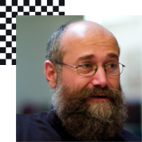

Main Program

Lecture
Listen to the speakers from various countries about the messages of sharing and opening.

CC Exhibition
Appreciate various creations applying CC license of artists, organized from Art Center Nabi.

Forum
Have the time to share your thoughts and opinions with experts for each topic.

Workshop
Try creating your own work using open source than just watching at it.

CC Ignite
Get opportunities to network with CC affiliates around the world, also after the summit.
SEE THE WHOLE PROGRAM

Yochai Benkler
Berkmen Professor of Enterpreneurial Legal Studies at Harvard Law School
Benker studies commons-based peer production, and published his seminal book. The Wealth of Networks in 2006.

SohYeong Noh
Director of Art Centre Nabi and a board member of CC Korea
As the main venue for new media art production in Korea, Nabi promotes cross-disciplinary collaboration and understands among science technology, humanities, and the arts.

Lila Tretikov
Executive Director of the Wikimedia Foundation
Lila Tretikov is the Executive Director of the Wikimedia Foundation, the nonprofit organization that operates Wikipedia. Wikipedia is freely available in 290 languages and used by nearly half a billion people around the world every month.

Kilnam Chon
Kilnam Chon helped bring the Internet to Asia and is an outspoken advocate for the open web and digital commons. In 2012, he was inducted into the inagural class of the Inernet Society's (ISOC) Internet Hall of Fame.

Julia Leda
President of Young Pirates of Europe
European ingetration, political democracy and participaiton of youth through online as her major condern, Reda's report outlining potential changes to EU copyright law was approved by the Parliament in July.

Ryan Merkley
CEO of Creative Commons, ex COO of the Mozilla Foundation
Ryan had been leading open-source projects at the Mozilla Foundation such as the open source movement.